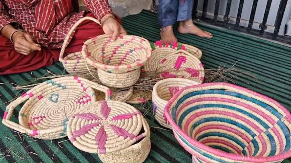

JAMMU: From the border villages of Akhnoor to the picturesque hills of Reasi, the remote settlements of Bani in Kathua district and the fast-growing suburban areas of Nagrota, women are quietly transforming their lives through determination, skill and entrepreneurship. What once began as small household activities such as tailoring, embroidery, food processing and handicraft making has gradually evolved into successful home-based businesses that are strengthening household incomes and contributing to rural development.
Across these regions, an increasing number of women are embracing self-employment by converting traditional knowledge into marketable products. Whether preparing traditional Dogra delicacies, stitching garments, weaving woollen products, producing organic food items or running small online businesses, these entrepreneurs are demonstrating that meaningful economic growth can begin from within their own homes.
Women in rural Jammu have traditionally played an important role in supporting their families through agriculture, livestock rearing and household-based occupations. However, changing socio-economic conditions, improved access to education and various government-supported livelihood initiatives have encouraged many women to look beyond conventional roles. Today, entrepreneurship has emerged as an effective means of achieving financial independence while continuing to fulfil family responsibilities.
Tradition Meets the Digital Market
Digital technology has played a significant role in this transformation. Social media platforms and messaging applications now allow entrepreneurs to display products, communicate with customers and receive orders without investing in expensive commercial spaces. Digital payment systems and courier services have further simplified the process of selling products across districts and even outside Jammu and Kashmir, enabling rural entrepreneurs to access larger markets.
The flexibility offered by home-based businesses has encouraged many women to pursue entrepreneurship without compromising family responsibilities. Unlike conventional employment, these enterprises allow women to manage their working hours according to household needs while generating an additional source of income — a balance that has become particularly important in rural and semi-urban areas where employment opportunities for women are often limited.
The Power of Collective Growth

Finished handwoven products from a rural women's collective — the kind of handicraft enterprise reshaping household incomes across Jammu. | Photo: Sahil Pandita
Government initiatives promoting women's entrepreneurship have also contributed to this positive change. Skill development programmes, vocational training, self-help groups and financial assistance schemes have encouraged women to establish micro-enterprises across Jammu. Self-help groups in particular have emerged as an important platform for collective growth — by working together, women share knowledge, improve production quality and access financial support that may otherwise be difficult to obtain individually.
The Challenges That Remain
Despite encouraging progress, women entrepreneurs continue to face several challenges. Limited access to finance, increasing competition, transportation difficulties in remote areas, fluctuating raw material costs and limited marketing opportunities remain common concerns. Entrepreneurs in hilly regions such as Reasi and Bani often face additional logistical challenges in transporting products to larger markets, while maintaining consistent production during adverse weather conditions.
Digital literacy is another important challenge. Although online platforms have created significant opportunities, managing a successful digital business requires skills in product photography, branding, customer communication and online marketing. Many entrepreneurs have learned these skills independently, while others have benefited from training programmes organised by educational institutions, government departments and community organisations.
Building More Than a Business
Experts believe that promoting women-led enterprises contributes not only to economic growth but also to broader social development. Financial independence enhances confidence, improves household decision-making and encourages greater participation in community activities. Behind every handcrafted product, stitched garment, homemade pickle or organic food item lies a story of resilience, determination and aspiration.
As rural entrepreneurship continues to grow across Akhnoor, Reasi, Bani and Nagrota, these women are quietly redefining success on their own terms. Their achievements highlight the power of self-reliance, community support and innovation, proving that meaningful economic transformation can begin from the heart of every home.